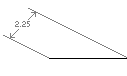

|
AddDimRotated Method |
Creates a rotated linear dimension.
Signature
RetVal = object.AddDimRotated(XLine1Point, XLine2Point, DimLineLocation, RotationAngle)
Object
ModelSpace Collection, PaperSpace Collection, Block
The objects this method applies to.
XLine1Point
Variant (three-element array of doubles); input-only
The 3D WCS coordinates specifying the first end of the linear dimension to be measured. This is where the first extension line will be attached.
XLine2Point
Variant (three-element array of doubles); input-only
The 3D WCS coordinates specifying the second end of the linear dimension to be measured. This is where the second extension line will be attached.
DimLineLocation
Variant (three-element array of doubles); input-only
The 3D WCS coordinates specifying a point on the dimension line. This will define the placement of the dimension line and the dimension text.
RotationAngle
Double; input-only
The angle, in radians, of rotation displaying the linear dimension.
RetVal
DimRotated object
The newly created rotated linear dimension object.
Remarks
 |
A linear dimension created at 45 degrees |
| Comments? |